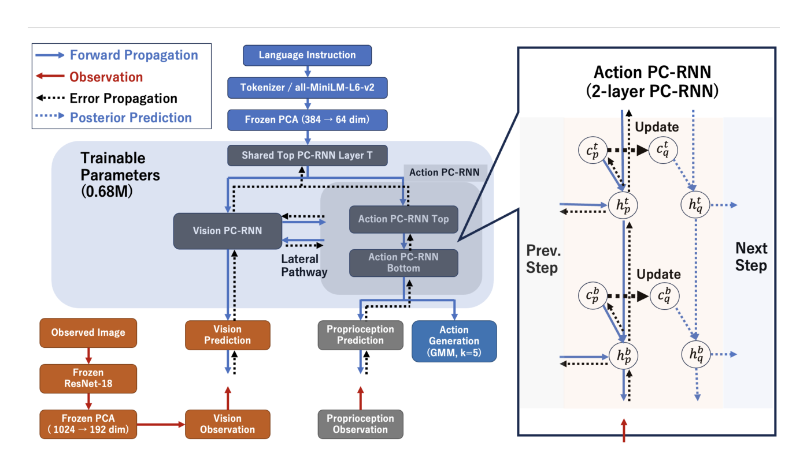

제출: 2026년 8월 27일 (v2 8월 30일) · 학습 파라미터 675,732개(0.68M) · 로봇 데이터 사전학습 없음 · 제어 46ms/스텝(21.6Hz)
한 줄 요약 (TL;DR)
요즘 로봇 정책은 수십억 파라미터를 쓰는데, 이 논문은 0.68M(68만) 파라미터로 LIBERO에서 쓸 만한 성능을 낸다. 비결은 크기를 줄이는 기술이 아니라 구조를 바꾼 것이다. 보통 정책은 "화면을 보고 → 행동을 낸다"인데, PredVLA는 "다음에 뭐가 보일지 스스로 예측하고 → 예측이 틀린 만큼만 내부 상태를 고친다". 놀랍게도 관측은 신경망에 직접 들어가지 않는다 — 오직 예측 오차를 통해서만 영향을 준다. LIBERO 짧은 호라이즌 3개 스위트 평균 86.9%, 긴 것 포함 4개 평균 75.4%. 같은 조건으로 맞춘 동급 크기 Transformer(19.7%)의 3.7배, LSTM(10.3%)의 7.4배다.
1배경 · 문제의식
대형 VLA(Vision-Language-Action)는 LIBERO 평균 95%를 넘을 만큼 강력하지만, 그 성능은 대규모 사전학습에서 나온다. 반면 작게 만들려는 기존 시도들은 대체로 기존 패러다임을 압축하는 데 그쳤다 — 즉 "관측 → 행동" 매핑은 그대로 두고 모델만 줄인 것이다.
이 논문의 질문: 파라미터 예산이 극도로 적을 때, "관측을 그대로 넣어 행동에 매핑"하는 것보다 "관측이 어떻게 생겨나는지의 동역학을 배우고, 예측 오차로 내부 상태를 추론"하는 편이 그 예산을 더 잘 쓰는 것 아닐까? 즉 예측을 작은 모델을 위한 귀납적 편향(inductive bias)으로 삼자는 발상이다.
이론적 바탕은 예측 부호화(predictive coding)다. 내부 생성 동역학이 앞으로의 감각 신호를 예측하고, 예측과 실제의 불일치를 최소화하는 방향으로 내부 상태를 온라인 추론한다 — 관측을 순환망에 직접 밀어 넣지 않는다.
2핵심 Contribution
0.68M 파라미터로 LIBERO 실용 성능 — 로봇 데이터 사전학습 없이 짧은 호라이즌 3스위트 평균 86.9%. 동일 조건의 동급 크기 Transformer 대비 3.7배, LSTM 대비 7.4배.
"예측 경로"가 핵심임을 단계적으로 입증 — PredVLA에서 평범한 순환 모방학습으로 한 기능씩 바꿔가며 내려가는 실험을 설계해, 예측 경로를 직접 관측 입력으로 바꾼 것이 단일 변경 중 가장 큰 하락을 만들며 전체 격차의 약 70%를 차지함을 보였다.
완전한 개루프 대조군을 공짜로 — 온라인 추론 횟수를 0으로 두면 관측이 계산에 전혀 등장하지 않는 개루프 정책이 된다. 재학습이나 구조 변경 없이 같은 모델로 폐루프/개루프를 정확히 비교할 수 있다.
3Method
동결된 앞단 (학습하지 않는 부분)
언어
사전학습 문장 인코더 all-MiniLM-L6-v2로 임베딩 후 고정 PCA로 384→64차원 축소. 에피소드 내내 고정
영상
3인칭 + 손목 카메라 2개를 동결 ImageNet ResNet18로 인코딩, 카메라별 고정 PCA로 1024→192차원
고유수용
관절 각도·그리퍼 상태를 인코더 없이 그대로 사용
비전·언어 인코더는 로봇 데이터로 사전학습하지 않았다. PCA 기저는 학습 시연으로 미리 맞춘 뒤 고정한다. 0.68M은 이 앞단을 뺀 학습되는 순환 제어기만의 크기다.
계층적 순환 동역학 — 시간 규모를 나눈 4개 모듈
학습되는 부분은 네 모듈로 이루어진다: 최상위 T(언어를 받는 공유 모듈), V(시각 분기), Atop·Abottom(행동 분기). 각 모듈은 고유한 시간 상수 τ를 갖는데, τ가 클수록 상태가 천천히 변한다.
왜 시간 규모를 나누나: "컵을 집어 서랍에 넣어라"라는 과제 수준 의도는 몇 초간 유지돼야 하고, 손가락 관절 명령은 매 스텝 바뀌어야 한다. 하나의 순환망에 같은 속도로 섞으면 둘 다 어정쩡해진다. 그래서 위쪽은 느리게, 아래쪽은 빠르게 돌도록 시간 상수를 다르게 준다 — 이것이 "계층적"의 실제 의미다.
두 분기는 서로 연결돼 있다. 시각→행동 병목이 보이는 것을 움직임에 잇고, 행동→시각 경로는 모델 자신의 이전 행동·고유수용 "예측값"을 시각 쪽에 전달한다(실제 관측이 아니라 예측값이라는 점이 중요하다 — 생물학의 원심성 복사, efference copy에 해당).
핵심: 관측은 오직 "예측 오차"로만 들어온다
보통 정책이라면 카메라 특징을 신경망에 넣는다. PredVLA는 그러지 않는다. 대신 다음을 최소화하도록 잠재 변수를 온라인으로 조정한다.
정확도 항
시각 예측 오차 + 고유수용 예측 오차 — "예측한 화면/관절값이 실제와 얼마나 다른가"
복잡도 항
조정된 잠재 변수가 모델이 원래 예상하던 값에서 얼마나 벗어났는지에 대한 벌점
이 둘의 합을 자유 에너지라 부르고, 최근 40스텝 창에 대해 10회 반복 경사하강으로 잠재 변수를 조정한다(논문 설정값). 신경망 가중치는 이때 전혀 바뀌지 않는다 — 조정되는 것은 생성 동역학이 이미 정의해 둔 잠재 변수뿐이다.
직관: 눈을 감고 컵을 향해 손을 뻗는다고 하자. 머릿속 예상대로 가고 있으면 아무것도 고칠 필요가 없다. 예상과 다른 촉감·모습이 왔을 때만 "아, 컵이 생각보다 왼쪽에 있구나" 하고 내부 추정을 고친다. PredVLA가 관측을 쓰는 방식이 정확히 이것이다 — 관측은 모델을 끌고 가는 입력이 아니라 어긋남을 알려주는 신호다.
학습과 출력
학습 때는 잠재 변수도 파라미터처럼 취급해 신경망과 함께 최적화하며, 목적함수는 자유 에너지 + 시연 행동의 음의 로그우도다. 행동은 가우시안 혼합 분포(여러 후보 동작을 동시에 표현할 수 있는 형태, k=5)로 출력한다. 행동 우도 항은 학습에만 쓰이고 테스트 시 자유 에너지에는 포함되지 않는다. 학습에 쓰인 잠재 변수들은 배포 시 버려진다.
부가 효과: 스위치 하나로 개루프
온라인 조정 횟수를 0으로 두면 잠재 변수가 모델이 예상한 값에 그대로 머물고, 관측은 계산 어디에도 등장하지 않는다. 그러면 완전한 개루프 정책이 된다 — 재학습 없이 같은 모델로 "감각을 쓸 때 vs 안 쓸 때"를 정확히 비교할 수 있다.
4실험 결과
LIBERO 4개 스위트 (14개 시드 평균 ± 표준편차)
모델
SPATIAL
GOAL
OBJECT
3스위트 평균
LONG
4스위트 평균
PredVLA (0.68M)
83.19 ±6.10
88.40 ±3.83
89.24 ±6.13
86.94
40.57 ±6.44
75.35
SPATIAL·GOAL·OBJECT는 각각 물체 배치·목표 조건·물체 종류가 달라지는 짧은 호라이즌 10태스크씩이고, LONG은 시연 평균 276스텝의 긴 태스크다(짧은 쪽은 125~149스텝). 긴 호라이즌에서 40.6%로 크게 떨어지는 것이 이 방법의 분명한 한계다.
같은 조건으로 맞춘 대조군 (앞단·시연·행동 디코더·평가 프로토콜 동일)
모델
파라미터
4스위트 평균
PredVLA 대비
PredVLA
675,732
75.35
—
BC-Transformer (동급 크기)
646,628
19.73
3.7배 차이
BC-LSTM (동급 크기)
—
10.26
7.4배 차이
Transformer + 행동 청킹(길이 8)
—
16.70
—
Transformer + 행동 청킹(길이 16)
—
3.44
—
파라미터 수를 거의 같게 맞췄으므로(646K vs 676K) 차이는 크기가 아니라 구조에서 온다. 참고로 3.7배·7.4배는 3스위트 평균 기준 수치다. 제어 속도는 앞단과 온라인 추론을 포함해 스텝당 46ms(21.6Hz), RTX 5090 기준.
5Ablation — 무엇이 실제로 기여했나
가장 인상적인 설계는 PredVLA에서 평범한 순환 모방학습(BC-RNN)까지 기능을 하나씩 바꿔가며 내려가 보는 실험이다. 어느 요소가 성능을 지탱하는지 단계별로 분리된다.
예측 경로가 압도적으로 중요하다: 예측 경로를 직접 관측 입력으로 바꾼 변경이 단일 변경 중 가장 큰 하락을 만들었고, 전체 격차의 약 70%를 설명한다. 논문의 핵심 주장을 뒷받침하는 결과.
나머지 요소들도 각각 기여한다: 학습 시점의 잠재 변수 추론, 테스트 시점의 오차 기반 조정, 계층적 시간 규모, 감각 예측 오차 채널이 서로 구별되는 기여를 보였다.
6핵심 Figure / Table

Figure 1 — PredVLA 구조. 파란 화살표는 순전파, 주황/빨강은 관측, 검은 점선은 오차 전파다. 아래 왼쪽에서 관측 이미지가 동결 ResNet-18 → 고정 PCA를 거쳐 들어오지만, 파란 상자(학습 파라미터 0.68M) 안으로 직접 들어가지 않고 "Vision Prediction"과 만나 오차로만 연결되는 것이 핵심이다. 언어는 최상위 모듈 T로만 들어가고, 시각 분기와 행동 분기는 lateral pathway로 연결된다. 오른쪽은 각 스텝에서 사전 예상값 cp가 오차를 받아 조정된 값 cq로 갱신되는 과정. (출처: arXiv:2608.26673)
Table 3·4의 핵심: PredVLA 4스위트 평균 75.35 vs 동급 크기 BC-Transformer 19.73, BC-LSTM 10.26. 앞단·시연·행동 디코더·평가 방식을 모두 동일하게 통제했으므로, 이 격차는 순환 제어기의 구조 차이에만 기인한다.